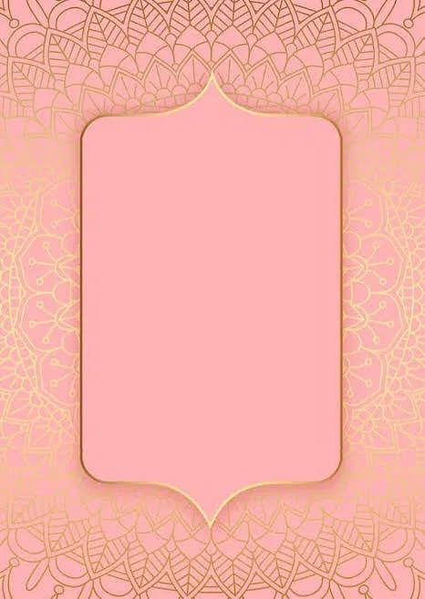

Blossom Boutique crafts artisan floral arrangements, each one wrapped in a silken gold and white box and named for the bloom it carries within.
Deep red petals unfurl in rich, velvet layers. A classic bloom for love, courage, and quiet luxury.
Golden-orange petals catch the light in every fold. Bright, cheerful, and full of quiet celebration.
Broad, sunlit petals turn toward the light. Warm, generous, and endlessly optimistic.
Tall spires of soft green bells, stacked in delicate rhythm. A symbol of luck, and calm, understated grace.
Tiny blue buds cluster in soft, grape-like spires. Humble, tender, and quietly enchanting.
Slender purple spires carry a soft, familiar scent. Soothing, graceful, and gently timeless.
Soft pink petals drift like the season itself. Delicate, romantic, and quietly poetic.
Deep, velvet-toned petals in warm autumnal hues. Grounded, refined, and understatedly rare.
Deep, dramatic petals with a striking velvet finish. Striking, confident, and unapologetically rare.
Crisp white petals gather around a soft golden heart. Cheerful, timeless, and quietly perfect.
Muted, sandy-toned petals in a gentle, warm hue. Understated, elegant, and endlessly wearable.
Champagne-toned petals catch the light like silk. Our signature bloom, wrapped in gold from root to tip.

← Back to RedThere is a reason the rose has outlived every fashion. Long before ribbons and boxes, it grew wild along garden walls, folding petal over petal until the centre disappeared into shadow. To hold one is to hold something that has always meant devotion — not the loud kind, but the kind that stays. Ours are cut at first light, when the red is deepest and the scent has not yet loosened into the day.
Marigolds do not ask to be noticed quietly. They arrive in full, layered blooms the colour of late afternoon, and they hold that colour through the whole of a bright day. In many homes they are strung at doorways to welcome someone in — a small, cheerful insistence that warmth is always worth making room for.
A sunflower spends its whole short life turning toward the light, and somehow that simple habit has come to mean hope. Ours open wide and unashamed, a ring of gold around a centre dark as fertile soil. Bring one into a room and the room remembers what daylight feels like.
Tall, pale-green spires, each bell cupped like a hand catching rain — Bells of Ireland grow with a quiet, architectural grace that most flowers don't attempt. They carry no scent to speak of, and no petals in the usual sense, only stacked rows of soft colour that arrange themselves like a hushed choir.
Muscari rise in small, tight clusters, each bud packed close like something holding its breath before spring properly arrives. Their blue is the deep, slightly dusty blue of very early morning, and a handful of stems is enough to make an entire table feel like it's just been rained on, gently.
Lavender has a way of slowing a room down. Even before you catch the scent, the colour does the work — that soft, spent-violet shade that never quite settles into blue or pink. Traditionally laid among linens to keep them sweet, ours are cut long enough to gather into loose, unfussy bunches that look like they've always belonged wherever they're placed.
Brown tulips are for the quieter kind of romance — the sort that doesn't need to be the brightest thing in the room. Their petals hold the colour of well-worn leather and late autumn light, warm rather than dark. Rare among tulip varieties, they've become something of a favourite for those who prefer their elegance understated.
Black Star Gladiolus is the boldest thing we grow — near-black petals, ruffled wide, with a fine white star traced at each throat like a signature. Tall and unmissable on the stem, it's a flower that doesn't ask permission to be dramatic, and we wouldn't want it any other way.
There's nothing complicated about a daisy, and that's exactly the point. White petals, a small sun at the centre, the kind of flower a child picks first without being taught to. We keep ours simple too — no dye, no drama, just the cheerful honesty daisies have always been known for.
Quicksand roses carry a colour that's hard to name — somewhere between sand, champagne, and the inside of a shell. They're the rose we recommend when someone wants elegance without ceremony: soft, warm, and endlessly easy to place in any room or any hand.
Our Champagne Rose is treated by hand until the petals take on a soft, metallic gold — a finishing touch reserved for our most special arrangements. It catches the light the way real celebration does: briefly, generously, and impossible to ignore. This is the bloom we reach for when a moment deserves a little more shine.
For only a handful of days each year, the cherry trees let go of everything at once. What's left behind is a version of pink that doesn't really exist anywhere else — soft, brief, and slightly apologetic about how beautiful it is. We've tried to bottle that same feeling: fleeting, gentle, gone before you've finished looking.
Blossom Boutique began with a single branch and a wish to make every bouquet feel like a gift unwrapped slowly. Each arrangement is boxed by hand in silk, gold, and the colour of the bloom inside — a quiet, elegant ritual from our hands to yours.